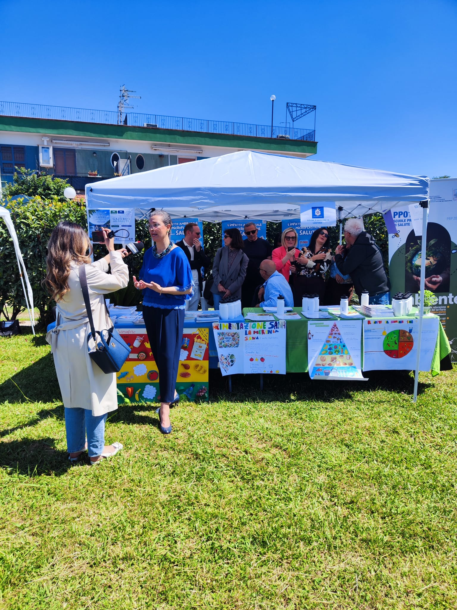

Galleria Fotografica



La Lega Navale di Giugliano non è solo un circolo nautico, ma un presidio ambientale e sociale dedicato alla tutela e alla valorizzazione del Lago Patria.
Una pagaia rosa per la prevenzione. Il Dragon Boat sul Lago Patria è una delle discipline di punta della nostra sezione, simbolo di forza, consapevolezza e rinascita.
In collaborazione con l'ASL Napoli 2 Nord, promuoviamo la salute "in tutte le politiche", collegando il benessere dell'individuo a quello dell'ambiente circostante.
Lavoriamo con le scuole, come il V Circolo Montessori, per insegnare ai più giovani il rispetto per l'acqua e il suolo del nostro territorio.
